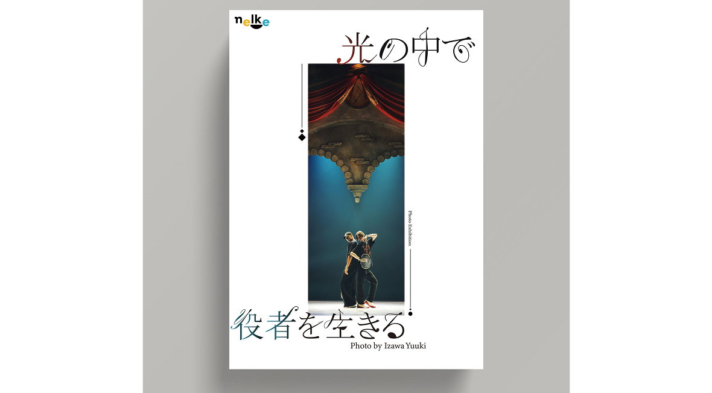

写真展
ポスター 課題2025 10/24

舞台役者の井澤勇貴さんの趣味が写真であることがきっかけとなり、写真展を開催する体でポスターを作成しました。神秘性と静けさを表現するため、余白と縦構図を活かし物語性を感じさせるビジュアルに仕上げました。キャッチコピーも明朝体をベースに作字し白の背景に映えるように作成しました。また、舞台と音楽の結びつきはとても強い ため音符や楽譜を感じさせる繊細なデザインを心がけました。
2025 10/24
舞台役者の井澤勇貴さんの趣味が写真であることがきっかけとなり、写真展を開催する体でポスターを作成しました。神秘性と静けさを表現するため、余白と縦構図を活かし物語性を感じさせるビジュアルに仕上げました。キャッチコピーも明朝体をベースに作字し白の背景に映えるように作成しました。また、舞台と音楽の結びつきはとても強い ため音符や楽譜を感じさせる繊細なデザインを心がけました。